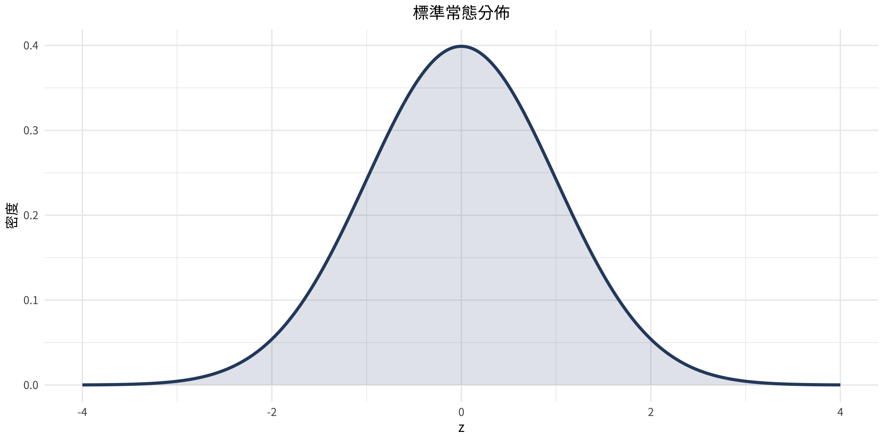
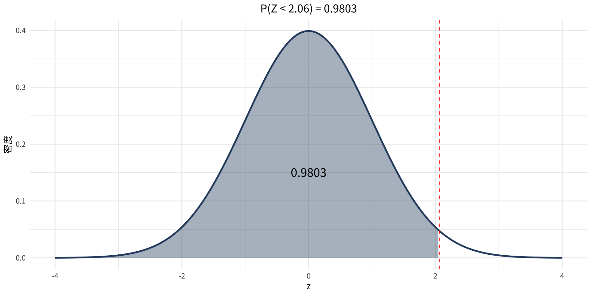
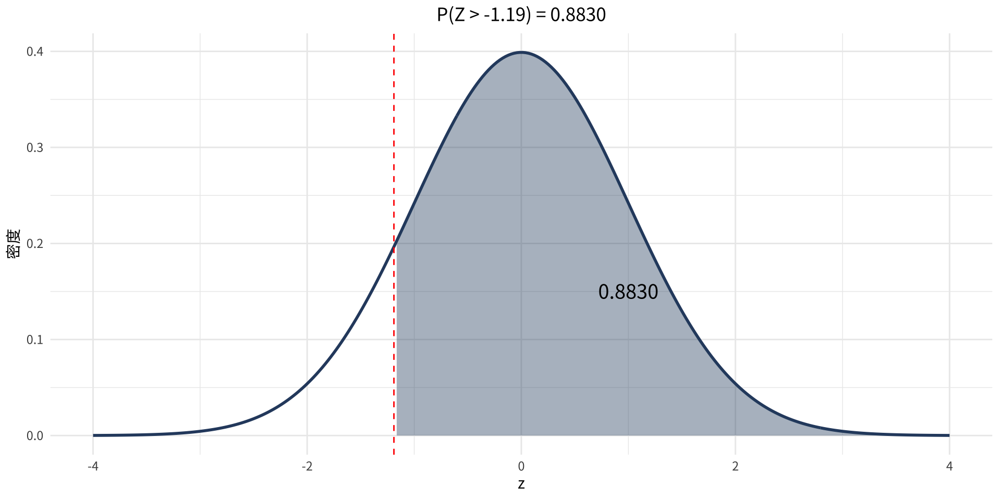
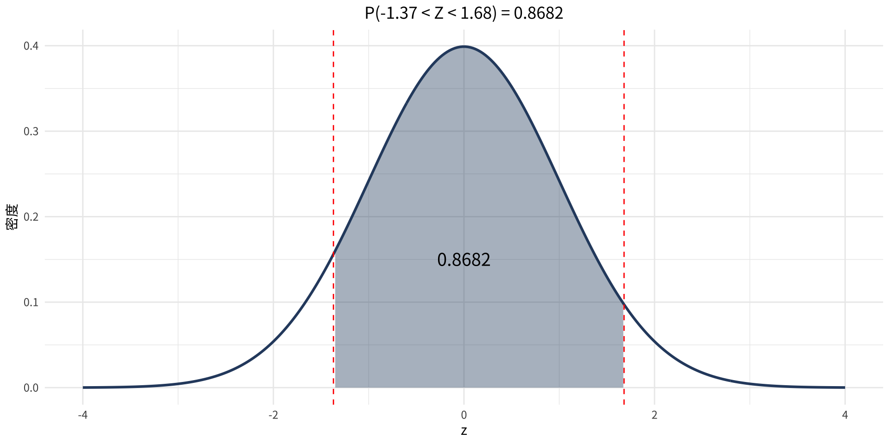
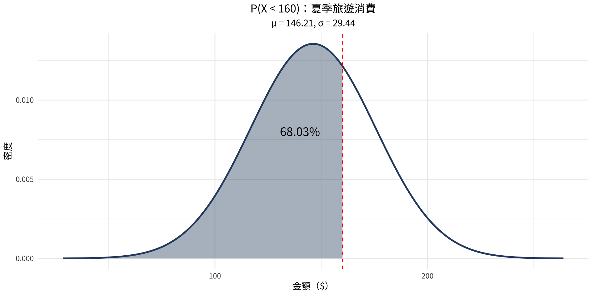
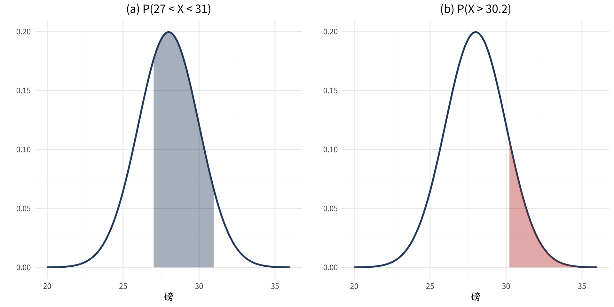
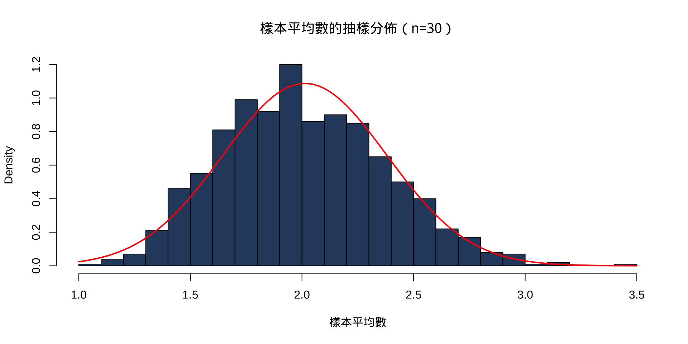

統計學
第6章：常態分佈
實踐大學
2026-08-02
本章概覽
涵蓋小節：
- 6-1 常態分佈
- 6-2 常態分佈的應用
- 6-3 中央極限定理
- 6-4 二項分佈的常態近似
常態分佈是統計學中最重要且最廣泛使用的連續機率分佈。其熟悉的鐘形曲線廣泛出現在自然現象、測量誤差與統計推論中。
第 6-1 節：常態分佈
常態分佈的性質
定義
常態分佈是一種連續、對稱的鐘形分佈。曲線完全由平均數 \mu 與標準差 \sigma 決定。
主要性質：
- 分佈呈鐘形，對平均數左右對稱
- 平均數、中位數、眾數三者相等
- 曲線為連續曲線——永遠不碰觸 x 軸
- 曲線下方的總面積等於 1
- 約 68% 的數值落在 \mu \pm 1\sigma 內；95% 落在 \mu \pm 2\sigma 內；99.7% 落在 \mu \pm 3\sigma 內

標準常態分佈
定義
標準常態分佈是平均數 \mu = 0、標準差 \sigma = 1 的常態分佈。此分佈上的值稱為 z 值或 z 分數。
z 分數可將任意常態變數 X 轉換為標準常態：
z = \frac{X - \mu}{\sigma}
- z 分數代表 X 距離平均數的標準差個數
- 曲線下方面積 = 機率
求標準常態曲線下的面積
面積可透過以下方式求得：
- 表 E（標準常態表）——教科書附錄
- R：
pnorm(z)計算 P(Z < z)
常用 R 函數
pnorm(z)— z 左側面積1 - pnorm(z)— z 右側面積pnorm(z2) - pnorm(z1)— z1 與 z2 之間的面積qnorm(p)— 給定左尾面積 p，求 z 值
範例 6-1
z 左側面積
求 z = 2.06 左側的面積。
範例 6-1
解題
數學解法
- 在表 E 中查找 z = 2.06
- 面積 = 0.9803
- 解讀：98.03% 的數值低於 z = 2.06
x <- seq(-4, 4, length.out = 300)
df <- data.frame(x = x, y = dnorm(x))
ggplot(df, aes(x, y)) +
geom_line(color = "#2c4a6e", linewidth = 1) +
geom_area(data = filter(df, x <= 2.06),
aes(x, y), fill = "#2c4a6e", alpha = 0.4) +
annotate("text", x = 0, y = 0.15, label = "0.9803", size = 5) +
geom_vline(xintercept = 2.06, linetype = "dashed", color = "red") +
labs(title = "P(Z < 2.06) = 0.9803", x = "z", y = "密度")
範例 6-2
z 右側面積
求 z = −1.19 右側的面積。
範例 6-2
解題
數學解法
- z = −1.19 左側面積：由表 E 得 0.1170
- 右側面積 = 1 − 0.1170 = 0.8830
x <- seq(-4, 4, length.out = 300)
df <- data.frame(x = x, y = dnorm(x))
ggplot(df, aes(x, y)) +
geom_line(color = "#2c4a6e", linewidth = 1) +
geom_area(data = filter(df, x >= -1.19),
aes(x, y), fill = "#2c4a6e", alpha = 0.4) +
annotate("text", x = 1, y = 0.15, label = "0.8830", size = 5) +
geom_vline(xintercept = -1.19, linetype = "dashed", color = "red") +
labs(title = "P(Z > -1.19) = 0.8830", x = "z", y = "密度")
範例 6-3
兩個 z 值之間的面積
求 z = −1.37 與 z = +1.68 之間的面積。
範例 6-3
解題
數學解法
- z = 1.68 左側面積：0.9535
- z = −1.37 左側面積：0.0853
- 兩者之間面積 = 0.9535 − 0.0853 = 0.8682
x <- seq(-4, 4, length.out = 300)
df <- data.frame(x = x, y = dnorm(x))
ggplot(df, aes(x, y)) +
geom_line(color = "#2c4a6e", linewidth = 1) +
geom_area(data = filter(df, x >= -1.37 & x <= 1.68),
aes(x, y), fill = "#2c4a6e", alpha = 0.4) +
annotate("text", x = 0, y = 0.15, label = "0.8682", size = 5) +
geom_vline(xintercept = c(-1.37, 1.68), linetype = "dashed", color = "red") +
labs(title = "P(-1.37 < Z < 1.68) = 0.8682", x = "z", y = "密度")
範例 6-4
多個機率計算
求標準常態分佈下列機率：
(a) P(0 < Z < 2.32) (b) P(Z < 1.65) (c) P(Z > 1.91)
範例 6-4
解題
數學解法
- (a) P(0 < Z < 2.32) = 2.32 左側面積減去 0 左側面積 = 0.9898 − 0.5000 = 0.4898
- (b) P(Z < 1.65) = 1.65 左側面積 = 0.9505
- (c) P(Z > 1.91) = 1 − 1.91 左側面積 = 1 − 0.9719 = 0.0281
範例 6-5
由面積求 z 值
求一個 z 值，使標準常態分佈曲線下 0 與該 z 值之間的面積為 0.2123。
範例 6-5
解題
數學解法
- 將給定面積加上 0.5000，得累積（左尾）面積：0.5000 + 0.2123 = 0.7123
- 在表 E 中搜尋最接近 0.7123 的面積
- 對應的 z 值為 z = 0.56
關鍵規則
qnorm(p) 是 pnorm(z) 的反函數。當需要給定機率求 z 值時，使用此函數。
第 6-2 節：常態分佈的應用
應用常態分佈
對於非標準常態變數 X（具有平均數 \mu 與標準差 \sigma），求機率的方法：
公式
z = \frac{X - \mu}{\sigma}
將 X 轉換為 z 分數，再利用標準常態求面積。
在 R 中，直接使用 pnorm(x, mean = mu, sd = sigma) ——無需手動轉換。
解題
- 確認 \mu 與 \sigma
- 畫圖並標示所求區域
- 將 X 轉換為 z（或直接使用 R）
- 求機率
範例 6-6
問題
美國人夏季旅遊消費金額呈常態分佈，\mu = $146.21，= $29.44。隨機選取一位美國人，求其夏季旅遊消費**少於 160** 的機率。
解題
z = \frac{160 - 146.21}{29.44} = \frac{13.79}{29.44} \approx 0.47
z = 0.47 左側面積：查表值 0.6808；R 計算得 0.6803（約 68%）
x <- seq(mu - 4*sigma, mu + 4*sigma, length.out = 300)
df <- data.frame(x = x, y = dnorm(x, mu, sigma))
ggplot(df, aes(x, y)) +
geom_line(color = "#2c4a6e", linewidth = 1) +
geom_area(data = filter(df, x <= 160), aes(x, y),
fill = "#2c4a6e", alpha = 0.4) +
geom_vline(xintercept = 160, linetype = "dashed", color = "red") +
annotate("text", x = 140, y = 0.008, label = "68.03%", size = 5) +
labs(title = "P(X < 160)：夏季旅遊消費",
subtitle = paste0("μ = ", mu, ", σ = ", sigma),
x = "金額（$）", y = "密度")
範例 6-7
報紙回收
美國家庭每月平均產生 28 磅的廢報紙供回收，\sigma = 2 磅，假設呈常態分佈。
(a) P(27 < X < 31) (b) P(X > 30.2)
範例 6-7
x <- seq(mu - 4*sigma, mu + 4*sigma, length.out = 300)
df <- data.frame(x = x, y = dnorm(x, mu, sigma))
p1 <- ggplot(df, aes(x, y)) +
geom_line(color = "#2c4a6e", linewidth = 1) +
geom_area(data = filter(df, x >= 27 & x <= 31),
aes(x, y), fill = "#2c4a6e", alpha = 0.4) +
labs(title = "(a) P(27 < X < 31)", x = "磅", y = "")
p2 <- ggplot(df, aes(x, y)) +
geom_line(color = "#2c4a6e", linewidth = 1) +
geom_area(data = filter(df, x >= 30.2),
aes(x, y), fill = "#c0392b", alpha = 0.4) +
labs(title = "(b) P(X > 30.2)", x = "磅", y = "")
gridExtra::grid.arrange(p1, p2, ncol = 2)
範例 6-8
咖啡消費量
每人每年的咖啡消費量呈常態分佈，\mu = 1.64 加侖，\sigma = 0.24 加侖。在 500 人的樣本中，有多少人每年消費少於 1 加侖？
範例 6-8
解題
數學解法
z = \frac{1 - 1.64}{0.24} = \frac{-0.64}{0.24} \approx -2.67
- z = −2.67 左側面積：0.0038
- 人數：500 \times 0.0038 = 1.9 → 約 2 人
[1] 0.003830381[1] 1.91519答案： 500 人中約有 2 人每年消費少於 1 加侖。
範例 6-9
警察學院資格
報考警察學院的申請者需接受體能測試，成績呈常態分佈，\mu = 200，\sigma = 20。成績排名前 10% 的申請者將被錄取。求最低錄取分數。
範例 6-9
解題
數學解法
- 需求第 90 百分位數 → 找 z 使 P(Z < z) = 0.90
- z \approx 1.28
- X = \mu + z·\sigma = 200 + 1.28(20) = 225.6 \approx 226
答案： 申請者至少需要 226 分才能進入前 10%。
範例 6-10
問題
某族群的收縮壓呈常態分佈，\mu = 120，\sigma = 8。求包含中間 60% 讀數的血壓範圍。
解題
- 中間 60% → 每尾各 20% → 找 z 使 P(Z < z) = 0.20 與 P(Z < z) = 0.80
- z_1 \approx -0.84，z_2 \approx 0.84
- X_1 = 120 + (−0.84)(8) = 113.28
- X_2 = 120 + (0.84)(8) = 126.72
[1] 113.267[1] 126.733答案： 中間 60% 的讀數落在 113.28 至 126.72 mmHg 之間。
範例 6-11
問題
研究者聲稱倉庫的科技庫存量呈近似常態分佈，\mu = 110,000 單位，\sigma = 15,000 單位。隨機選取一座倉庫，求其庫存量超過 132,500 單位的機率。
[1] 0.0668072[1] 1.5[1] 0.0668072答案： z = 1.50，P(X > 132,500) \approx 0.0668（約 6.68%）。
範例 6-12
問題
職業棒球比賽時長的分佈呈負偏態，\mu = 166 分鐘，\sigma = 26 分鐘。隨機選取一場比賽，求其時長少於 145 分鐘的機率。
注意
此分佈非常態分佈——它呈負偏態。僅在分佈近似常態時，才適合使用常態分佈方法。此處答案為近似值。
[1] -0.8076923[1] 0.2096339注意： z \approx -0.81；查表值 0.2090，R 計算得 P(X < 145) \approx 0.2096（約 21%）。由於資料呈偏態，此僅為粗略估計。
第 6-3 節：中央極限定理
中央極限定理
中央極限定理（CLT）
隨著樣本數 n 增大，樣本平均數 \bar{X} 的抽樣分佈趨近於常態分佈，無論母體分佈的形狀為何，只要 n 足夠大（通常 n \geq 30）。
\mu_{\bar{X}} = \mu \qquad \sigma_{\bar{X}} = \frac{\sigma}{\sqrt{n}}
標準誤 \sigma_{\bar{X}} = \sigma/\sqrt{n} 衡量樣本平均數在不同樣本間的變異程度。
應用中央極限定理
樣本平均數的 z 分數
z = \frac{\bar{X} - \mu}{\sigma/\sqrt{n}}
在 R 中： 使用 pnorm(xbar, mean = mu, sd = sigma/sqrt(n))
中央極限定理說明為何常態分佈在統計學中如此核心：
- 調查結果、民調平均數、樣本統計量均趨向常態
- 即使母體分佈未知，也能進行推論
# 中央極限定理示範：從偏態分佈抽樣
set.seed(42)
pop <- rexp(10000, rate = 0.5) # 偏態母體
sample_means <- replicate(1000, mean(sample(pop, 30)))
hist(sample_means, breaks = 30, col = "#2c4a6e",
main = "樣本平均數的抽樣分佈（n=30）",
xlab = "樣本平均數", freq = FALSE)
curve(dnorm(x, mean(pop), sd(pop)/sqrt(30)), add = TRUE,
col = "red", lwd = 2)
範例 6-13
兒童收視時間
美國兒童每週平均收看電視 \mu = 25 小時，\sigma = 3 小時。隨機抽取 n = 20 名兒童，求樣本平均數超過 26.3 小時的機率。
範例 6-13
解題
z = \frac{26.3 - 25}{3/\sqrt{20}} = \frac{1.3}{0.671} \approx 1.94
P(\bar{X} > 26.3) = P(Z > 1.94) \approx 0.0263（2.63%）
範例 6-14
問題
美國登記車輛的平均車齡為 \mu = 96 個月，\sigma = 16 個月，假設分佈近似常態。隨機抽取 n = 36 輛車，求 P(90 < \bar{X} < 100)。
[1] 2.666667[1] 0.9209683答案： P(90 < \bar{X} < 100) \approx 0.9211（92.11%）
樣本平均數極有可能落在此區間內，因為標準誤僅 2.67 個月。
範例 6-15
問題
每人每年平均肉類消費量 \mu = 218.4 磅，\sigma = 25 磅。
(a) 求單一個體 P(X < 224) (b) 求 n = 40 人樣本的 P(\bar{X} < 224)
[1] 0.5886213[1] 0.9217147答案： (a) 查表值 0.5871，R 計算得 \approx 0.5886（58.86%）；(b) 查表值 0.9222，R 計算得 \approx 0.9217（92.17%）
關鍵洞察
樣本平均數的機率遠高於個體，因為標準誤（\sigma/√n）小於 \sigma——樣本平均數的變異性低於個別觀測值。
第 6-4 節：二項分佈的常態近似
為何使用常態近似？
二項分佈雖然精確，但在 n 很大時計算繁瑣。常態分佈提供了一個方便的近似方法。
使用常態近似的條件
當下列條件成立時，可使用常態近似二項分佈： np \geq 5 \quad \text{且} \quad nq \geq 5 其中 q = 1 − p。
近似用的常態分佈參數為： \mu = np \qquad \sigma = \sqrt{npq}
連續修正
連續修正
由於我們以連續分佈近似離散分佈，需在 X 上加減 0.5：
| 二項式表示 | 常態近似 |
|---|---|
| P(X = a) | P(a − 0.5 < X < a + 0.5) |
| P(X \geq a) | P(X > a − 0.5) |
| P(X > a) | P(X > a + 0.5) |
| P(X \leq a) | P(X < a + 0.5) |
| P(X < a) | P(X < a − 0.5) |
範例 6-16
問題
調查發現 6% 的美國駕駛人邊開車邊閱讀。若隨機選取 300 名駕駛人，求恰好 25 人邊開車邊閱讀的近似機率。
驗證條件： n = 300，p = 0.06，q = 0.94
np = 300(0.06) = 18 \geq 5 ✓
nq = 300(0.94) = 282 \geq 5 ✓
參數： \mu = np = 18，\sigma = \sqrt{npq} = \sqrt{300 \times 0.06 \times 0.94}
mu = 18 sigma = 4.1134 [1] 0.02290202[1] 0.02263092答案（常態近似）： 查表值 0.0227，R 計算得 \approx 0.0229（2.29%）；精確二項值：\approx 0.0226。
範例 6-17
喪偶保齡球員
研究發現打保齡球的人中有 10% 是喪偶者。若選取 200 名保齡球員，求10 人或以上為喪偶者的機率。
範例 6-17
解題
驗證條件： np = 200(0.10) = 20 \geq 5，nq = 200(0.90) = 180 \geq 5 ✓
參數： \mu = np = 20，\sigma = \sqrt{200 \times 0.10 \times 0.90} = \sqrt{18} \approx 4.24
套用連續修正，P(X \geq 10) = P(X > 9.5)：
z = \frac{9.5 - 20}{4.24} \approx -2.48
P(X \geq 10) = 1 - 0.0066 = 0.9934
mu = 20 sigma = 4.2426 [1] 0.9933358[1] 0.9964714答案： 查表值 0.9934，R 計算得 \approx 0.9933——200 名保齡球員中有 10 人以上喪偶幾乎是必然的。
範例 6-18
打擊率
在棒球中，打擊率 .320 表示打者有 32% 的機率安打。在 100 次打席中，求安打次數26 次或以下的機率。
範例 6-18
解題
驗證條件： np = 32 \geq 5，nq = 68 \geq 5 ✓
參數： \mu = 32，\sigma = \sqrt{100 \times 0.32 \times 0.68} \approx 4.66
套用連續修正，P(X \leq 26) = P(X < 26.5)：
z = \frac{26.5 - 32}{4.66} \approx -1.18
mu = 32 sigma = 4.6648 [1] 0.1191886[1] 0.1180158答案（常態近似）： \approx 0.119（11.9%）；精確值：\approx 0.118。
範例 6-19
問題
投擲硬幣 10 次，求恰好出現 6 次正面的機率，分別使用：
(a) 二項分佈
(b) 常態近似
注意
此處 np = 5，nq = 5——恰好在最低門檻。對小 n，常態近似的精確度可能較低。
mu = 5 sigma = 1.581139 [1] 0.2050781[1] 0.204524比較： 精確值 = 0.2051；常態近似 = 0.2045（以查表手算則得 0.2034）
即使在此邊界情況下，近似值仍相當接近。
第6章摘要
| 主題 | 公式 | R 函數 |
|---|---|---|
| 標準常態面積（左側） | P(Z < z) | pnorm(z) |
| 標準常態面積（右側） | 1 − P(Z < z) | pnorm(z, lower.tail=FALSE) |
| 由面積求 z | — | qnorm(p) |
| 非標準常態 | z = (X − \mu)/\sigma | pnorm(x, mean, sd) |
| 樣本平均數機率 | z = (X̄ − \mu)/(\sigma/√n) | pnorm(xbar, mean, sd/sqrt(n)) |
| 二項分佈的常態近似 | \mu=np，\sigma=\sqrt{npq} | $$0.5 連續修正 |
重點整理
- 常態分佈完全由 \mu 與 \sigma 決定
- 將 X 轉換為 z 分數以使用標準常態表
- 中央極限定理保證當 n \geq 30 時，樣本平均數近似常態
- 當 np \geq 5 且 nq \geq 5 時，使用常態近似二項分佈
- 常態近似時務必套用連續修正
Acknowledgement
Copyright notice. These teaching materials have been adapted from Bluman, A. G. (2012). Elementary statistics: A step by step approach (8th ed.). McGraw-Hill. All rights are reserved by the original authors and publishers.
Non-commercial use only. These materials are strictly intended for educational purposes and must not be used for commercial gain or profit.
Proper attribution. Any reproduction, distribution, or use of these materials must provide proper attribution to the original source.

Elementary Statistics: A Step by Step Approach